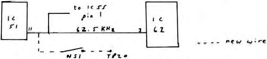

Nascom Newsletter |
Volume 2 · Number 6 · January 1983 |
| Page 14 of 41 |
|---|
This article describes a very simple method of producing a high speed interface for the Nascom 2 enabling a whole 64K of memory to be dumped or recovered from tape in about 2 and a half minutes with the minimum of fuss.
The modification includes the commonly carried out 2400 baud conversion which, briefly, involves connecting:
| TP21 to TP5 | |
| and | TP20 to TP4 |
on the main board and then setting LSW2 switches 1 & 6 in the UP position.
A glance at sheet 2 of the Nascom 2 circuit diagram will show that IC22 generates a signal of 38.4 KHz to control data transfer and receive rates, thus is the limiting factor in the above 2400 baud modification. At IC51 pin 11 there is a signal of 62.5 KHz and by simply connecting a wire between IC51 pin 11 and TP20 we have effectively removed this constraint and the cassette receive and transmit rates are nearly doubled. (Purists, quite rightly, tell me that pin 1 of IC22 should be disconnected from it’s socket to avoid problems with beat frequencies but I have not done this because of the bother of a second switch and have had absolutely no ill-effects.)
If the Link between IC51 pin 11 and TP20 has a switch (NS1) then the following cassette speeds are available:–
| Baud Rate | NS1 | LSW2 | |||||
|---|---|---|---|---|---|---|---|
| 1 | 2 | 3 | 4 | 5 | 6 | ||
| 300 | OFF | D | D | D | D | D | D |
| 300 | ON | D | D | D | D | D | D |
| 1200 | OFF | U | D | D | U | D | D |
| 2000 | ON | U | D | D | U | D | D |
| 2400 | OFF | U | U | U | U | U | U |
| 4000 | ON | U | U | U | U | U | U |
| (D = down, U = up) | |||||||
I have found that on my system using a very cheap Japanese cassette recorder and good quality ordinary bias audio tapes, can achieve very nearly 100% reliability in tape data transfer at any speed and get those lengthy programs in and out of my machine both rapidly and with the minimum of bother and fuss.
| Page 14 of 41 |
|---|